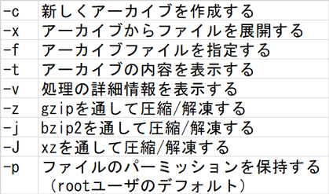

- 問題ID : 22153 makeによるソースコードからのビルドとインストール
- 履歴
正解
tar xJf example.tar.xz
unxz -c example.tar.xz | tar xf -
xz -dc example.tar.xz | tar xf -
解説
「example.tar.xz」は、拡張子が「.tar.xz」であることから、複数のファイルがtarコマンドでアーカイブされた後、xzで圧縮されている事を示しています。
書式：tar オプション ファイル|ディレクトリ
tarコマンドの主なオプション

＊tarコマンドのオプションはハイフン(-)を省略できる。
表中の「-x」でtar（アーカイブ）を展開、「-J」でxzを解凍、「-f」でファイル名を指定すれば、tarコマンドだけで一気に解凍、展開まで処理できます。
例）tar xJf example.tar.xz
もしくは、xzやunxzの–cオプション（標準出力へ書き出す）で、解凍後のファイル名をtarコマンドにパイプで渡しても同じ事が可能です。
例）unxz -c example.tar.xz | tar xf -
*上記tarコマンドの最後のハイフンは、標準入力からファイル名を受け取る事を意味し、この場合は必須です。
例）xz -dc example.tar.xz | tar xf -
*xzコマンドで解凍する場合は「-d」オプションを付加する必要があります。
上述の内容から正解は
・tar xJf example.tar.xz
・unxz -c example.tar.xz | tar xf -
・xz -dc example.tar.xz | tar xf -
です。
他の選択肢について見ていきます。
・tar xzf example.tar.xz
tarコマンドのオプション「-z」は、gzipを通して解凍・圧縮するオプションです。拡張子が「.tar.gz」のファイルであれば適切ですが、今回の拡張子は「.tar.xz」ですので、誤りです。
・tar czf example.tar.xz
tarコマンドのオプション「-c」は、複数のファイルを1つにまとめて新しくアーカイブを作成するオプションです。今回はそれとは逆の動作である展開が必要ですので、誤りです。
・xz -c example.tar.xz | tar xf -
unxzコマンドはオプション無しで解凍できますが、xzコマンドで解凍する場合は「-d」オプションを付加する必要があります。「-d」オプションが無いため、誤りです。
参考
プログラムの元となる、C言語などのプログラミング言語で記載されたファイルを「ソースファイル」もしくは単に「ソース」といいます。
プログラマー等の人の手によって作成されたソースファイルは、そのままでは機械（CPU）がそれを理解し、実行する事はできません。よってこれを、機械語で記載されたファイル「バイナリファイル」（プログラムファイル）に変換する必要があります。
この変換作業を「コンパイル」といいます。
ソースファイルをコンパイルする事でバイナリファイルを作成し、そのバイナリファイルを適切なディレクトリにインストールする事で、そのプログラムを利用する事ができます。
RPMなどのパッケージ化されたプログラムと比べて手間がかかりますが、その分、環境に合わせた細かな調整や、パッケージ化される前の最新のバージョンアップをいち早く使用できるなどの利点があります。
ソースファイルからプログラムのインストールまでの手順は、以下の通りです。
1. ソースファイルが含まれたアーカイブの展開
2. ソースファイルのコンパイルと、バイナリファイルのインストール
以下で「1. ソースファイルが含まれたアーカイブの展開」について、詳しく見ていきます。
プログラムのソースファイルは通常、汎用的な情報が記載されたヘッダファイル、設定ファイル、ドキュメントファイルなどと一緒に、「アーカイブ」（複数のファイルを1つにまとめた状態）として配布されています。
このような「アーカイブ」は一般的にtarコマンドで行われます。また、サイズを減らす為にgzipやbzipで圧縮されています。
例
えば、拡張子「.tar.gz」が付いたファイルは、複数のファイルがtarコマンドでアーカイブされた後、gzipで圧縮されている事を示します。
「.tar.bz2」なら圧縮にbzip2が使われて、「.tar.xz」であれば圧縮にxzが使われています。このように、1つにまとめられて圧縮され
たファイルを通常「tarボール」といいます。
この「tarボール」を適切に解凍、展開して元の状態に戻す事が、最初のステップになります。
gzip
で圧縮されたファイルは「gzip -d」もしくは「gunzip」コマンドで解凍できます。bzip2で圧縮されたファイルであれば「bzip2
-d」もしくは「bunzip2」コマンドで、xzで圧縮されたファイルであれば「xz -d」もしくは「unxz」コマンドで解凍できます。
例）
gzip –d example.tar.gz
bzip2 –d example.tar.bz2
xz –d example.tar.xz
解凍した後、アーカイブされた状態をtarコマンドで展開します。
例）
tar xf example.tar
書式：tar オプション ファイル|ディレクトリ
tarコマンドの主なオプション
＊tarコマンドのオプションはハイフン(-)を省略できる。
表中の「-z」「-j」や「-J」を用いれば、tarコマンドだけで一気に解凍、展開まで処理できます。
例）
tar xzf example.tar.gz
tar xjf example.tar.bz2
tar xJf example.tar.xz
もしくは、–cオプション（標準出力へ書き出す）で、解凍後のファイル名をtarコマンドにパイプで渡しても同じ事が可能です。
例）
gzip -dc example.tar.gz | tar xf -
*上記tarコマンドの最後のハイフンは、標準入力からファイル名を受け取る事を意味し、この場合は必須です。
このようにtarボールの適切に解凍、展開した後、「2. ソースファイルのコンパイルと、バイナリファイルのインストール」へ進みます。